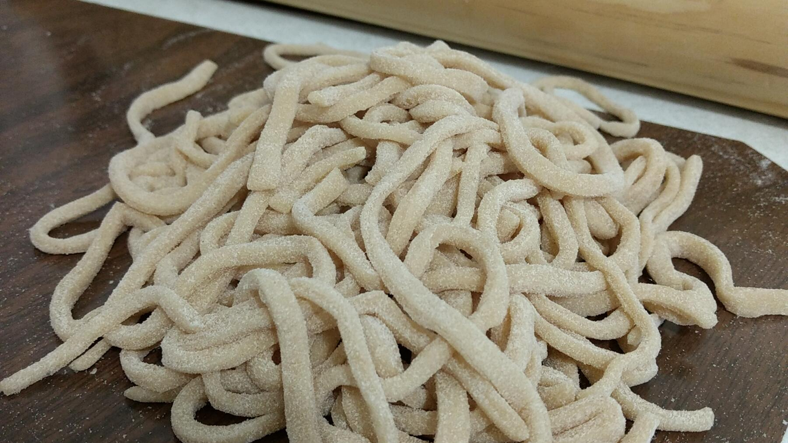

Zurück zur Übersicht
Italienischer Nudelteig
Grundrezept für frische Pasta aus Mehl, Hartweizengrieß und Ei, ausgewalzt mit der Nudelmaschine.
- Zeit
- 45 Min.
- Schwierigkeit
- mittel
- Kategorie
- Teige & Grundrezepte
- Ernährung
- vegetarisch
Zutaten
Portionen
- 125 gMehl Type 405
- 130 gHartweizengrieß
- 1Ei
- Kaltes Wasser
- 1 PriseSalz
Zubereitung
- Grieß, Mehl, Ei und Salz in eine Schüssel geben und mit dem Knethaken verrühren, bis sich größere Klumpen bilden.
- Teelöffelweise kaltes Wasser zugeben, bis keine trockenen Brösel mehr zwischen den Klumpen zu sehen sind.
- Mit den Händen weiterkneten, bis ein großer Klumpen entsteht. Gut in Frischhaltefolie wickeln und 1 Stunde im Kühlschrank ruhen lassen.
- Den Teig in Portionen von etwa 100 g teilen. Jede Portion etwa 15-mal durch die Nudelmaschine walzen und dabei immer wieder zusammenfalten, die Walzen dürfen dabei auf Stufe 6 oder 7 stehen. Zum Schluss den Abstand auf 2–3 mm stellen und den Teig dünn auswalzen.
- Den Teig durch einen Schneideaufsatz drehen, zum Beispiel für Tagliatelle, oder Tortellini daraus formen.
- Wenn die Pasta nicht sofort gekocht wird, auf einem Küchentuch oder einem Ständer trocknen lassen. Ein Kuchengitter funktioniert dafür wunderbar.
- Beim Kochen viel Salz ins Wasser geben. Frische Nudeln sind schneller fertig als gekaufte, oft schon nach 2,5 Minuten.
Hinweis: Die 45 Minuten gelten ohne die 1 Stunde Kühlzeit. Du brauchst eine Nudelmaschine.